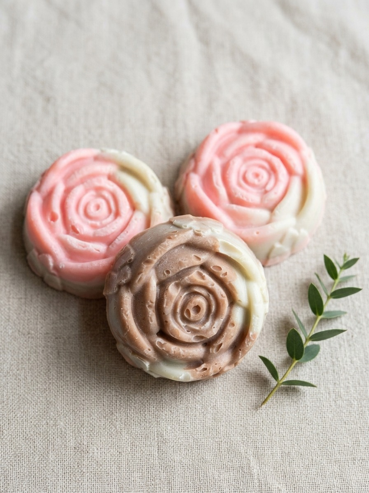

סבון לבנדר מלטף
רגיעה עמוקה, הזנה עדינה והגנה על שילוב הלחות
הרכב ושילוב הרכיבים
שמן זית, שמן קוקוס, חמאת שיאה, שמן קיק, חימר לבן (קאולין) ושמן אתרי לבנדר.
סגולות ותכונות מורחבות
- הרגעה והורדת אדמומיות: שמן אתרי לבנדר ידוע בתכונותיו המרגיעות. הוא מסייע בהפחתת גירויים, אדמומיות ותחושת אי-נוחות בעור, ומשרה תחושת שלווה נפשית וגופנית בסוף היום.
- שיקום מעטפת הלחות הטבעית: השילוב של שמן זית עשיר בוויטמין E יחד עם חמאת שיאה מעניק שכבת הגנה המונעת התייבשות לאחר הרחצה.
- ספיגת שומן עדינה ללא ייבוש: החימר הלבן (קאולין) מנקה בעדינות עודפי שומן ולכלוך מנקבוביות העור מבלי לפגוע בשומנים הטבעיים החיוניים לבריאות העור.
- קצף קטיפתי ומפנק: שמן הקוקוס והקיק יוצרים קצף קרמי ועשיר המעניק חוויית רחצה רכה במיוחד.
✨ למי מתאים?
מתאים במיוחד בעלי עור רגיש, מעורב או מגורה, לאנשים הסובלים מיובש קל אחרי רחצה בסבון רגיל, ולכל מי שמחפש מקלחת מרגיעה להורדת מתחים לפני השינה.
להזמנה ב-WhatsApp

סבון חמים ומעורר
פילינג עדין, המרצת זרימת הדם וחידוש המרקם
הרכב ושילוב הרכיבים
חמאת שיאה, חמאת קקאו, שמן קוקוס, שמן זית, שמן קיק, חימר אדום, אבקת קינמון, ושמנים אתריים (ברגמוט, לבנדר, גרניום, סנדלווד).
סגולות ותכונות מורחבות
- המרצת מחזור הדם והתחדשות תאים: תרכובת הקינמון והחימר האדום מעוררת את זרימת הדם הנימית מתחת לעור, מסייעת בסילוק רעלים ומעניקה לעור מראה חיוני וזוחֵר.
- פילינג טבעי והחלקה: גרגירי הקינמון העדינים יחד עם המינרלים של החימר האדום מסירים תאי עור מתים ומותירים מרקם חלק ומשיי.
- שיקום והזנה עמוקה לעור יבש: חמאת קקאו וחמאת שיאה מזינות בחומצות שומן חיוניות הפועלות לשיקום אלסטיות העור ולמניעת יובש קיצוני.
- ארומתרפיה מעוררת ומחממת: שילוב השמנים האתריים (סנדלווד, ברגמוט, גרניום ולבנדר) מעניק ארומה עשירה, מעוררת חושים ומחממת.
✨ למי מתאים?
אידיאלי לעור יבש, מחוספס, עייף או דהוי, לחובבי פילינג וניקוי עמוק, ולמי שרוצה להתחיל את הבוקר עם מקלחת מעוררת אנרגיה ורעננות.
להזמנה ב-WhatsApp

סבון פרחוני
טיפוח משי, איזון הפרשת השומן וטיהור מינרלי
הרכב ושילוב הרכיבים
שמן שקדים מתוקים, שמן זית, חמאת שיאה, שמן קוקוס, שמן קיק, חימר ירוק, חימר אדום, ושמנים אתריים (לבנדר, גרניום, ניאולי).
סגולות ותכונות מורחבות
- רכות משי וגמישות: שמן שקדים מתוקים נספג בקלות ומעניק לעור גמישות, רכות יוצאת דופן ומגע קטיפתי מבלי להכביד.
- איזון וטיהור עמוק: השילוב המאוזן של חימר ירוק (הידוע בספיגת עודפי שומן וטיהור רעלים) וחימר אדום עוזר לאזן את הפרשת השומן הטבעית של העור.
- תמיכה ואנטי-אוקסידנטים: שמן אתרי ניאולי וגרניום מעניקים הגנה אנטי-בקטריאלית עדינה ומסייעים לשמירה על מראה עור נקי ובריא.
- ניחוח פרחוני מרענן: ארומה פרחונית, יוקרתית ומרעננת המעניקה חוויית ספא ביתית מלאה.
✨ למי מתאים?
מתאים לכל סוגי העור (רגיל, יבש, או מעורב), מושלם כסבון טיפוח יומי לכל בני המשפחה, ולכל מי שאוהב ניחוח פרחוני יוקרתי ועור רך וגמיש בכל רחצה.
להזמנה ב-WhatsApp